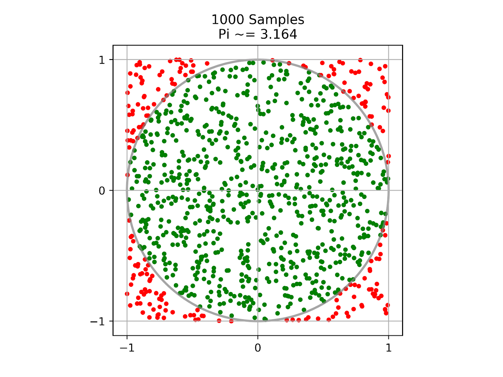

Monte Carlo Estimation of π
Contents
Monte Carlo Estimation of π#
This tutorial shows you how to estimate the value of π using a Monte Carlo method that works by randomly sampling points within a 2x2 square. We can use the proportion of the points that are contained within the unit circle centered at the origin to estimate the ratio of the area of the circle to the area of the square. Given that we know the true ratio to be π/4, we can multiply our estimated ratio by 4 to approximate the value of π. The more points that we sample to calculate this approximation, the closer the value should be to the true value of π.
We use Ray tasks to distribute the work of sampling and Ray actors to track the progress of these distributed sampling tasks. The code can run on your laptop and can be easily scaled to large clusters to increase the accuracy of the estimate.
To get started, install Ray via pip install -U ray. See Installing Ray for more installation options.
Starting Ray#
First, let’s include all modules needed for this tutorial and start a local Ray cluster with ray.init():
import ray
import math
import time
import random
ray.init()
Note
In recent versions of Ray (>=1.5), ray.init() is automatically called on the first use of a Ray remote API.
Defining the Progress Actor#
Next, we define a Ray actor that can be called by sampling tasks to update progress. Ray actors are essentially stateful services that anyone with an instance (a handle) of the actor can call its methods.
@ray.remote
class ProgressActor:
def __init__(self, total_num_samples: int):
self.total_num_samples = total_num_samples
self.num_samples_completed_per_task = {}
def report_progress(self, task_id: int, num_samples_completed: int) -> None:
self.num_samples_completed_per_task[task_id] = num_samples_completed
def get_progress(self) -> float:
return (
sum(self.num_samples_completed_per_task.values()) / self.total_num_samples
)
We define a Ray actor by decorating a normal Python class with ray.remote.
The progress actor has report_progress() method that will be called by sampling tasks to update their progress individually
and get_progress() method to get the overall progress.
Defining the Sampling Task#
After our actor is defined, we now define a Ray task that does the sampling up to num_samples and returns the number of samples that are inside the circle.
Ray tasks are stateless functions. They execute asynchronously, and run in parallel.
@ray.remote
def sampling_task(num_samples: int, task_id: int,
progress_actor: ray.actor.ActorHandle) -> int:
num_inside = 0
for i in range(num_samples):
x, y = random.uniform(-1, 1), random.uniform(-1, 1)
if math.hypot(x, y) <= 1:
num_inside += 1
# Report progress every 1 million samples.
if (i + 1) % 1_000_000 == 0:
# This is async.
progress_actor.report_progress.remote(task_id, i + 1)
# Report the final progress.
progress_actor.report_progress.remote(task_id, num_samples)
return num_inside
To convert a normal Python function as a Ray task, we decorate the function with ray.remote.
The sampling task takes a progress actor handle as an input and reports progress to it.
The above code shows an example of calling actor methods from tasks.
Creating a Progress Actor#
Once the actor is defined, we can create an instance of it.
# Change this to match your cluster scale.
NUM_SAMPLING_TASKS = 10
NUM_SAMPLES_PER_TASK = 10_000_000
TOTAL_NUM_SAMPLES = NUM_SAMPLING_TASKS * NUM_SAMPLES_PER_TASK
# Create the progress actor.
progress_actor = ProgressActor.remote(TOTAL_NUM_SAMPLES)
To create an instance of the progress actor, simply call ActorClass.remote() method with arguments to the constructor.
This creates and runs the actor on a remote worker process.
The return value of ActorClass.remote(...) is an actor handle that can be used to call its methods.
Executing Sampling Tasks#
Now the task is defined, we can execute it asynchronously.
# Create and execute all sampling tasks in parallel.
results = [
sampling_task.remote(NUM_SAMPLES_PER_TASK, i, progress_actor)
for i in range(NUM_SAMPLING_TASKS)
]
We execute the sampling task by calling remote() method with arguments to the function.
This immediately returns an ObjectRef as a future
and then executes the function asynchronously on a remote worker process.
Calling the Progress Actor#
While sampling tasks are running, we can periodically query the progress by calling the actor get_progress() method.
# Query progress periodically.
while True:
progress = ray.get(progress_actor.get_progress.remote())
print(f"Progress: {int(progress * 100)}%")
if progress == 1:
break
time.sleep(1)
To call an actor method, use actor_handle.method.remote().
This invocation immediately returns an ObjectRef as a future
and then executes the method asynchronously on the remote actor process.
To fetch the actual returned value of ObjectRef, we use the blocking ray.get().
Calculating π#
Finally, we get number of samples inside the circle from the remote sampling tasks and calculate π.
# Get all the sampling tasks results.
total_num_inside = sum(ray.get(results))
pi = (total_num_inside * 4) / TOTAL_NUM_SAMPLES
print(f"Estimated value of π is: {pi}")
As we can see from the above code, besides a single ObjectRef, ray.get() can also take a list of ObjectRef and return a list of results.
If you run this tutorial, you will see output like:
Progress: 0%
Progress: 15%
Progress: 28%
Progress: 40%
Progress: 50%
Progress: 60%
Progress: 70%
Progress: 80%
Progress: 90%
Progress: 100%
Estimated value of π is: 3.1412202